L05: Lower Shell of a Game Controller
Game controller: shells and beams
In this class we model the lower shell of a game controller and check what happens when somebody tries to break it. Thin plastic housings like this one are in most consumer products, so it pays off to know how to model them.
For example, look inside the Steam Controller in Figure 1. The case is a thin plastic shell stiffened by bosses and ribs. Walls of 2 mm on a part of 130 mm would need several solid elements through the thickness. Modelling wise it is very inefficient since this parts are so thin. What we can do instead is using other modelling concepts which still capture the local geometry accurately while being more efficient. If you remember the previous tutorial Solid, Shell or Beam?, there we saw that using shells or beams elements can significantly improve computing time while still being accurate. Now we are applying those modelling techniques to a real product.
A real case like this has far more detail than one practical class can cover, so let’s start with a simpler controller instead. Let’s focus on the lower shell which is the main structural component (Figure 2) and define the ribs ourselves.
| Material | \(E\) (MPa) | \(\nu\) | \(\sigma_y\) (MPa) |
|---|---|---|---|
| ABS | 2200 | 0.38 | ≈ 40 |
When do we call this product failed? Two things matter here. The ABS must stay below yield, about 40 MPa, and the circuit board inside must stay flat. The first is a stress check, the second a displacement check, and we are going to check both at the end.
🧩 Geometry and shell sections
The STEP file (shell_controller_lower.STEP) holds only surfaces. The part is symmetric about \(x = 0\), so partition it at \(x = 0\) and remove the other half.
As in the Solid, Shell or Beam? tutorial, each region gets a shell section of its own (Table 2).
| Region | Section | Thickness (mm) | Offset |
|---|---|---|---|
| Floor | bottom_shell | 2.1 | Top surface |
| Outer walls | outer_walls | 1.9 | Top surface |
| Bosses | Supports | 1.25 | Top surface |
| Triangular rib | rib | 1.0 | Middle surface |
The imported surfaces (STEP surface) are the inside faces of the part and all normals point into the controller. Top surface means the drawn face is the top of the shell, so the material goes to the other side, outwards (the figure below).
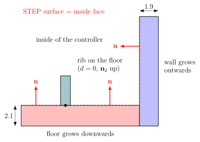
You can check it yourself. Assign → Element Normal shows the normals and View → Part Display Options → Render shell thickness shows the offsets.
A wall whose thickness grows inwards has a flipped normal. Flip it with Assign → Element Normal → Flip, as in the video.

🛤️ Ribs as beams and shells
We are going to add two types of ribs: ones using beams and a triangular one as a shell.
How to add ribs
The (beam) ribs are lines drawn on the floor with Tools → Partition → Face → Sketch, or with the tool. Pick the floor face, sketch the rib lines and press Done. Figure 7 (a) shows an example of the lines seen from above. Here I would really suggest that you come up with a pattern that you like or to sketch what you think is the best way to reinforce the shell. Here an example is shown:
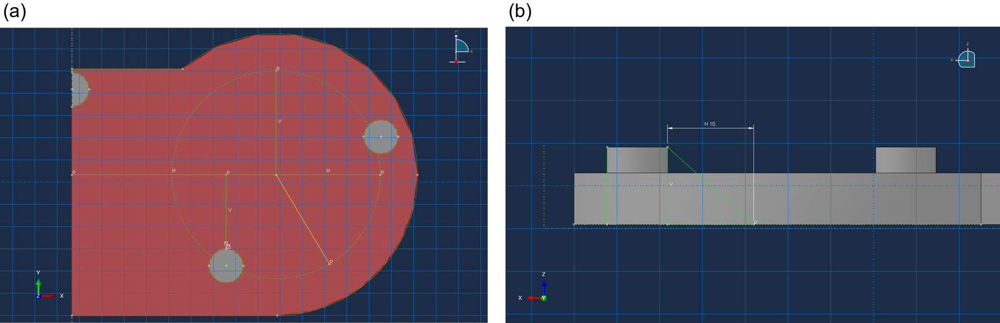
The small triangular rib next to the boss is modelled as a shell face of its own (section rib, 1 mm, middle surface). It stands in a vertical plane through the centre of the screw hole. A planar shell is sketched on a plane, so we first create a datum plane there
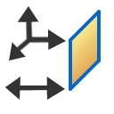
and then sketch the triangle on it with Shape → Shell → Planar .In Abaqus, every piece of geometry always needs a section or a property assigned.
For the beams that we are modelling as ribs, we are going to use the edges on the floor. Abaqus does not know that they should be beams. Using the stringer feature is how we tell Abaqus this. In the Property module use Special → Stringer → Create (or the icon ), select the rib lines and press Done. The beam section of the next step is then assigned to this stringer. Because the rib lines are partition edges of the floor, the beam elements of the stringer use the floor’s own nodes. So, the connection is done automatically by Abaqus.
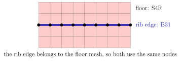
Profile and section
- Profile → Create → Trapezoidal with \(a = 1\), \(b = 3\), \(c = 1\), \(d = 0\). Here \(a\) is the width at the base, \(c\) the width at the top and \(b\) the height.
- Section → Create → Beam, choose the profile and ABS.
- Assign → Section on the stringer of the rib lines (set
ribs_beams).
\(d\) is where the beam line sits in the profile. With \(d = 0\) the beam line is on the base, so the rib grows away from the floor (Figure 11).
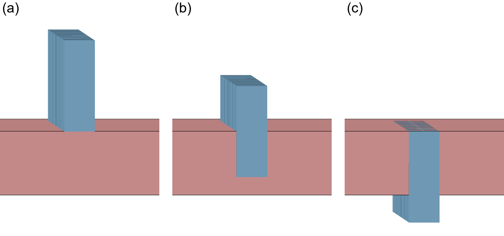
Orientation
Even if we assign a section with a given profile to a stringer, it can have any orientation around that line. Since the tangent vector already runs along the edge, we need to define another vector to fully define the orientation of the profile. Therefore, we need to specify one of these vectors so Abaqus knows how to orient the beam profile.
For that, the \(\mathbf{n}_1\) vector can be defined, which for our profile corresponds to the local horizontal coordinate system as shown below.
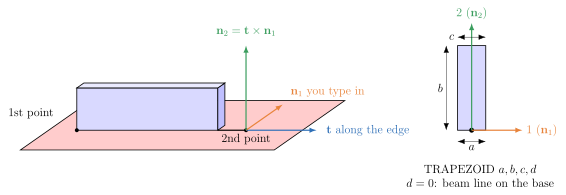
- \(t\) comes from the edge, from its first point to its second. It depends on the direction in which the line was drawn.
- \(n_1\) is what you type in Assign → Beam Section Orientation.
- \(n_2 = t \times n_1\), and the profile height \(b\) goes along \(n_2\). This is computed automatically by Abaqus.
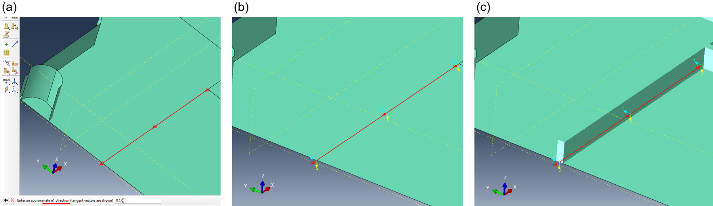
Make sure to check every rib
Once a section and the orientation are assigned to a line, we can visualize our beam with View → Part Display Options → Render beam profiles (scale factor 1). Figure 15 shows the three common results you can get.
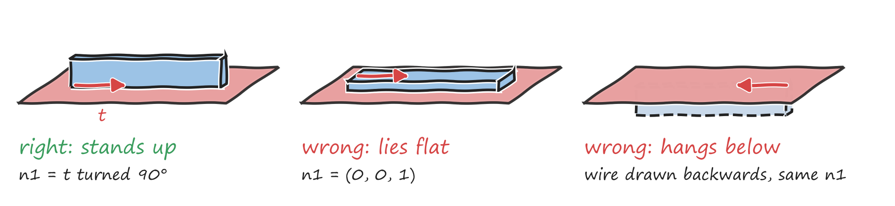
Of course, there are multiple valid ways of assigning the orientation and beam profile. For example, if the beam is at the bottom, we can either change the profile and move it up or we can flip the direction. Both options are valid.
🕸️ Mesh
The shells are meshed with S4R at a seed of about 0.5 mm, which gives about 23,000 nodes in the half model.

Bending the controller
The centre line is held and the grip is pushed down by 12 N at the snap-fit rim.

- Create a Static, General step.
- Apply XSYMM on all edges at \(x = 0\), \(U_3 = 0\) on the floor centre line and \(U_2 = 0\) at one node, which removes the rigid body motion that is left.
- Create a reference point at the rim centroid \((54.66, 11.53, 6.0)\) and a Coupling → Distributing → Structural with uniform weights and all six DOFs to the rim edges. The next section shows where this point comes from.
- Apply \(CF_3 = -12\) N (already includes a safety coefficient of 1.5) on the RP.
- Run and plot Mises as an envelope over the section points.
📍 How do we choose the RP?
The coupling spreads the load on the RP over the rim nodes, so that the node forces give the same force and the same moment as the load. With equal weights every node takes the same share \(F/n\) only when the RP sits at the centroid of the rim. Anywhere else the same force would apply a twist in the snap-fit.
The rim is a line. Its centroid can be taken from the rim nodes or from the rim as a line in terms of geometry:
\[\bar{x} = \frac{1}{n}\sum_{i=1}^{n} x_i \qquad\qquad \bar{x} = \frac{1}{L}\int_L x\,\mathrm{d}s\]and both give the same point (Figure 19). These values of course depend on how accurate the discretization of the geometry is, since we are performing a numerical calculation at the end of the day. Here \(\overline{x}\) is the in-plane position of the centroid of the snap-fit.
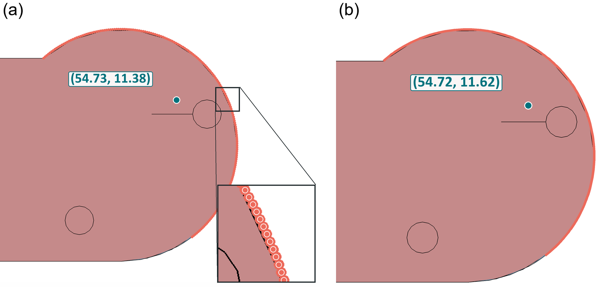
The values can be obtained by using this small script below.
Code: the centroid from the rim nodes
Abaqus can also average the rim nodes directly, which is what a coupling with uniform weights uses. Save these lines as a .py file and run it with File → Run Script. The model must be meshed.
from abaqus import *
import mesh
MODEL, SET = 'Model-1', 'snap_fit'
m = mdb.models[MODEL]
a = m.rootAssembly
nodes = {} # by label, so a node shared by two edges counts once
for e in a.sets[SET].edges:
inst = a.instances[e.instanceName]
src = m.parts[inst.partName] if inst.dependent else inst # a dependent instance keeps its mesh on the part
for n in src.edges[e.index].getNodes():
nodes[n.label] = n.coordinates
c = [0.0, 0.0, 0.0] # a plain loop, because 'from abaqus import *' replaces Python's sum
for xyz in nodes.values():
for k in range(3):
c[k] += xyz[k] / len(nodes)
print('%s: %d nodes, centroid = (%.2f, %.2f, %.2f)' % (SET, len(nodes), c[0], c[1], c[2]))
For the class model it prints snap_fit: 184 nodes, centroid = (54.73, 11.38, 6.00), within 0.2 mm of the strip result.
However, the same point can also be obtained with a trick using the Query function inside Abaqus.
Finding it using the Query function
In the Assembly module, Tools → Query → Mass properties can be used to find the centroid of an area. Since Abaqus does not natively support finding the centroid of a line, we can still find it by simply querying the surface below the snap-fit and then ignore the coordinate \(z\).
\[\bar{x}_{strip} = \underbrace{\color{orange}{\frac{1}{A}\int_A x\,\mathrm{d}A}}_{\text{Abaqus: Query}} = \frac{\int_L x\,h\,\mathrm{d}s}{h\,L} = \frac{1}{L}\int_L x\,\mathrm{d}s = \bar{x}_{line}\]So we partition the wall below the rim into a strip of constant height \(h\) and query only the strip faces. Abaqus computes the area centroid of the strip, the orange part below. Because every slice of the strip has \(\mathrm{d}A = h\,\mathrm{d}s\), the height cancels and what is left is the centroid of the rim line.
The query also returns \(z = h/2 = 3\). However, we can ignore it, since we know that we need to apply our RP at the same height as the snap fit \(z=6\) (Figure 20).
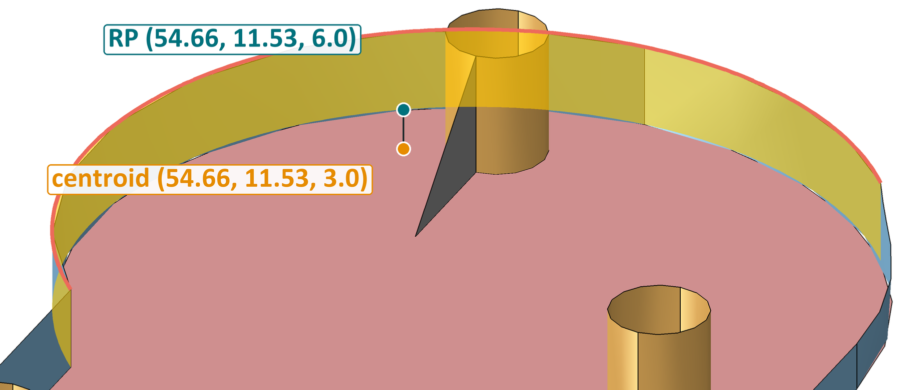
Select only the strip faces below the snap-fit rim. Any other face in the selection moves the centroid.
📏 Failure of the controller?

For the beam configuration defined here, we get a peak stress of around 13.0 MPa, and the RP moves down 1.17 mm.
For this case we pass the stress check, since we are quite far from the yield strength. However, that is only one of the two checks from the start. The circuit board is screwed onto the five bosses, so whatever the boss tops do, the board has to do too. Solder joints and small ceramic parts crack long before the ABS yields, so here the board decides whether the controller breaks.
What to read, and what not
The board only bends when the boss tops move by different amounts, so that they no longer lie on a straight line (a plane, in 3D), as in the figure below.
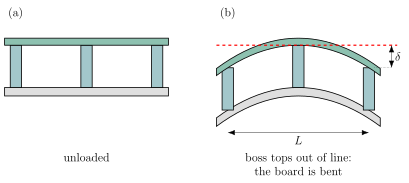
Reading the boss tops
- In Visualization, mirror the result about the symmetry plane with View → ODB Display Options → Mirror/Pattern → YZ plane, so you see the whole shell and all five bosses.
- Plot \(U_3\) with Result → Field Output, variable
U, componentU3. - Use Tools → Query → Probe Values on nodes of the top edge of each boss and write down \(U_3\). Only three bosses are in the half model. With XSYMM the mirrored boss has the same \(U_3\). Make sure you select nodes and not elements.
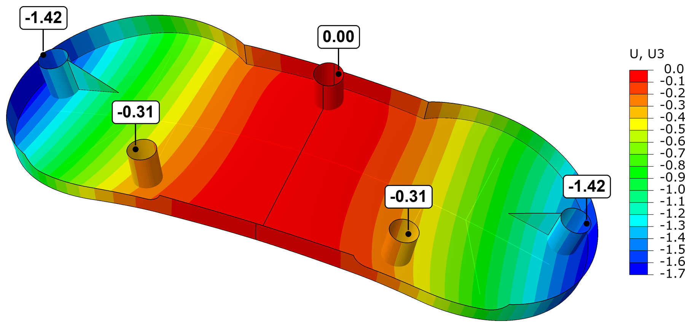
Both grip bosses go down 1.42 mm, the two front bosses 0.31 mm and the centre boss stays where it is (Figure 24).
So, for our analysis, only the difference between the middle boss and the displacement of the furthest bosses matters. So, the initially flat board got bent as shown below:
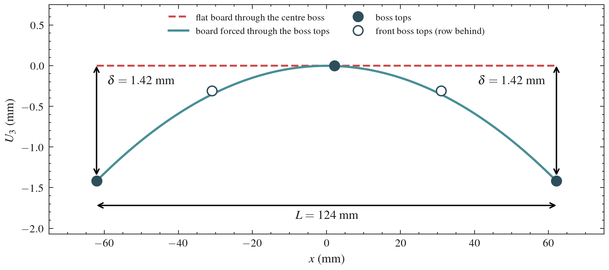
The limit
The bow of a board is \(\delta / L\). Boards with surface-mounted parts are usually allowed a bow of at most 0.75 % of their length (IPC-6012), and we use that as the limit the housing may force on the board.
The exact values used here are not important. If you were designing a controller like this one, these requirements would be given to you by someone else.
So for this load case our board would fail, although the ABS is only at a third of its yield stress. The model is linear, so the board limit is reached at \(12 \times 0.93 / 1.42 \approx 8\) N on the grip. The displacement check is the defining factor here, not the stress check.
Here is where experience as a designer or an engineer comes in. If the boss area is deforming too much, then we need to increase the bending stiffness along the span of the controller. This could mean adding more ribs, changing the material of the ribs, using a bigger profile, increasing the shell thickness, etc. Ideally, you can increase the stiffness of your model for the least cost, e.g., material cost, weight, etc.
Try a few of those changes and see if you can fulfil both conditions at the same time.